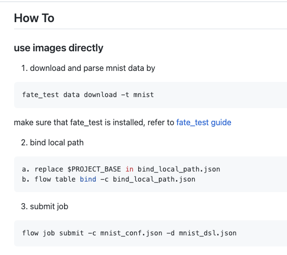
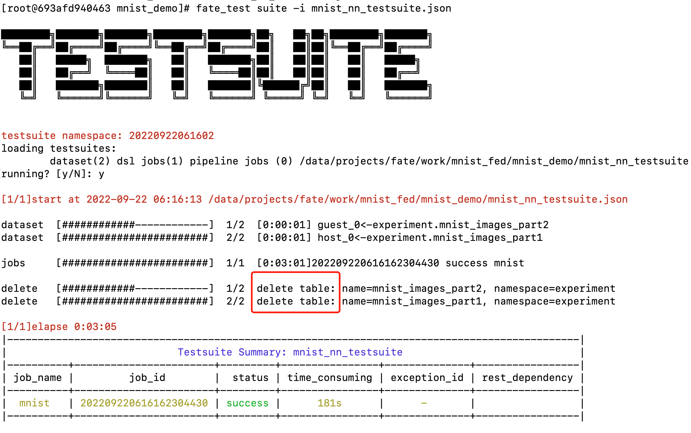

上上一篇介绍了如何使用FATE发起一个横向联邦学习任务，使用的数据格式是结构化的数据，使用的算法是经典的LR算法。
能不能使用FATE做计算机视觉的神经网络的联邦学习呢？
答案是可以的。本篇就通过手写数字识别这一经典任务来学习如何使用FATE来完成一个计算机视觉方面的神经网络算法的联邦学习job
实验环境 fate standalone 1.9.0
数据集mnist：/data/projects/fate/examples/data/mnist_train
code:/data/projects/fate/examples/dsl/v2/homo_nn/mnist_demo
最好把这几个文件夹复制出来，再改
code文件夹中有以下几个文件，后面需要用到。
在README.md中已经写出了用法，本篇将详细讲解。

实验步骤 下载数据集 执行fate_test data download -t mnist命令下载mnist数据集，下载的位置位于FATE/examples/data/mnist_train
绑定数据 修改bind_local_path.json的address.path为数据集文件夹所在的位置，修改后如下。
{ "engine" : "PATH" , "namespace" : "experiment" , "name" : "mnist_images" , "address" : { "path" : "/data/projects/fate/examples/data/mnist_train" } }
修改完成后执行flow table bind -c bind_local_path.json命令进行数据绑定。这样一来，文件夹中的数据就和命名空间为experiment，表名为mnist_images的表关联了起来。
返回类似即绑定成功。
"retcode" : 0,"retmsg" : "success"
配置文件并提交job mnist_dsl.json文件：
{ "components" : { "reader_0" : { "module" : "Reader" , "output" : { "data" : [ "data" ] } } , "homo_nn_0" : { "module" : "HomoNN" , "input" : { "data" : { "train_data" : [ "reader_0.data" ] } } , "output" : { "data" : [ "data" ] , "model" : [ "model" ] } } } }
mnist_conf.json文件：
{ "dsl_version" : 2 , "initiator" : { "role" : "guest" , "party_id" : 9999 } , "role" : { "arbiter" : [ 9999 ] , "host" : [ 9999 ] , "guest" : [ 9999 ] } , "component_parameters" : { "common" : { "homo_nn_0" : { "api_version" : 2 , "encode_label" : true , "max_iter" : 2 , "batch_size" : 32 , "early_stop" : { "early_stop" : "diff" , "eps" : 0.0001 } , "optimizer" : { "lr" : 0.001 , "optimizer" : "Adam" } , "loss" : "NLLLoss" , "metrics" : [ "accuracy" ] , "nn_define" : [ { "layer" : "Conv2d" , "in_channels" : 1 , "out_channels" : 10 , "kernel_size" : [ 5 , 5 ] } , { "layer" : "MaxPool2d" , "kernel_size" : 2 } , { "layer" : "ReLU" } , { "layer" : "Conv2d" , "in_channels" : 10 , "out_channels" : 20 , "kernel_size" : [ 5 , 5 ] } , { "layer" : "Dropout2d" } , { "layer" : "MaxPool2d" , "kernel_size" : 2 } , { "layer" : "ReLU" } , { "layer" : "Flatten" } , { "layer" : "Linear" , "in_features" : 320 , "out_features" : 50 } , { "layer" : "ReLU" } , { "layer" : "Linear" , "in_features" : 50 , "out_features" : 10 } , { "layer" : "LogSoftmax" } ] , "config_type" : "pytorch" } } , "role" : { "host" : { "0" : { "reader_0" : { "table" : { "name" : "mnist_images" , "namespace" : "experiment" } } } } , "guest" : { "0" : { "reader_0" : { "table" : { "name" : "mnist_images" , "namespace" : "experiment" } } } } } } }
执行flow job submit -c mnist_conf.json -d mnist_dsl.json命令提交job：
[root@693afd940463 mnist_demo] { "data" : { "board_url" : "http://127.0.0.1:8080/index.html#/dashboard?job_id=202209210827526887030&role=guest&party_id=10000" , "code" : 0, "dsl_path" : "/data/projects/fate/fateflow/jobs/202209210827526887030/job_dsl.json" , "job_id" : "202209210827526887030" , "logs_directory" : "/data/projects/fate/fateflow/logs/202209210827526887030" , "message" : "success" , "model_info" : { "model_id" : "arbiter-10000#guest-10000#host-10000#model" , "model_version" : "202209210827526887030" }, "pipeline_dsl_path" : "/data/projects/fate/fateflow/jobs/202209210827526887030/pipeline_dsl.json" , "runtime_conf_on_party_path" : "/data/projects/fate/fateflow/jobs/202209210827526887030/guest/10000/job_runtime_on_party_conf.json" , "runtime_conf_path" : "/data/projects/fate/fateflow/jobs/202209210827526887030/job_runtime_conf.json" , "train_runtime_conf_path" : "/data/projects/fate/fateflow/jobs/202209210827526887030/train_runtime_conf.json" }, "jobId" : "202209210827526887030" , "retcode" : 0, "retmsg" : "success" }
使用flow-test提交Job 除了上述之外，还可以快速提交一个job。
flow-test 快速的flow测试，比较方便，只需要修改mnist_nn_testsuite.json并执行一次命令即可。他有以下特点：
不需要提前绑定数据，执行完成后，也不存在被绑定的数据
日志会保存在到本地目录logs
不会产生model_id和model_version
下面介绍执行步骤：
修改mnist_nn_testsuite.json { "data" : [ { "engine" : "PATH" , "namespace" : "experiment" , "name" : "mnist_images" , "address" : { "path" : "/data/projects/fate/work/mnist_fed/mnist_images" }, "role" : "guest_0" }, { "engine" : "PATH" , "namespace" : "experiment" , "name" : "mnist_images" , "address" : { "path" : "/data/projects/fate/work/mnist_fed/mnist_images" }, "role" : "host_0" } ], "tasks" : { "mnist" : { "conf" : "./mnist_conf.json" , "dsl" : "./mnist_dsl.json" } } }
执行flow-test fate_test suite -i mnist_nn_testsuite.json
执行结果如下：

模型评估 上述训练完成之后，如何进行评估本次训练得到的模型效果呢？
答案是：截止到1.9.0版本，FATE还暂不支持对计算机视觉类任务进行模型评估。。。
我的做法是，直接在FATE-FLOW中找到Job生成的模型文件，自行实现对模型的评估。
要做到这一点需要熟悉源码。
从How到Why 前面我们了解了FATE提交一个视觉分类任务的基本流程，但是我们还有很多未知的东西：比如为什么要这样组织数据，FATE是如何读取配置创建模型的，联邦学习结束后保存的模型在哪里，如何调用？
想要知道这些需要读懂FATE源码。
源码（部分） 该部分介绍FATE是如何根据DSL和CONF配置读入数据、创建和训练模型以及导出模型的。
这里先介绍一些比较重要的目录：
从上面的案例中可以看到，我们主要使用的是HomoNN算法组件，所以这里我们要找到NN对应的位置：https://github.com/FederatedAI/FATE/tree/master/python/federatedml/nn，这里nn是神经网络的意思。
在该目录下，可以看到三个文件夹：
backend：公共后端代码
hetero_nn：纵向nn组件
homo_nn：横向nn组件
这三个文件夹中是需要重点读懂的代码。
首先，这里明确，我们要弄懂的问题：
图像数据是如何input的
为什么做图像任务时，数据的组织形式要分为images/、config.yaml、filenames以及targets
FATE是如何根据CONF生成模型，optimizer等算法参数的。
FATE是如何进行训练的。
FATE是否支持使用预训练的模型进行训练，是否支持使用GPU进行训练，是否可以自定义添加log等等，如果不能，可否开发自己的组件来实现。
如果使用配置定义模型，那么FATE支持的layer以及参数有哪些？
带着这些问题，我们来学习源码。
enter_point.py enter_point是homo_nn组件被调用的起点（存疑），文件位置：https://github.com/FederatedAI/FATE/blob/master/python/federatedml/nn/homo_nn/enter_point.py
重点关注HomoNNClient类。它包含几个重要的方法：
fit：模型训练
predict：模型预测
export_model和load_model：模型的导出和加载。
fit 以下是该方法的主要代码。
def fit (self, data, *args ): ... from federatedml.nn.homo_nn._torch import build_trainer ... self._trainer, dataloader = build_trainer( param=self.param, data=data, should_label_align=not self.component_properties.is_warm_start, trainer=self._trainer, ) self._trainer.fit(dataloader) self.set_summary(self._trainer.summary()) self._trainer.save_checkpoint() ...
可以看到trainer和dataloader是通过调用build_trainer返回的。
_torch.py 这是FATE进行联邦学习，homo_nn组件的主要实现代码。
build_trainer def build_trainer (param: HomoNNParam, data, should_label_align=True , trainer=None ): ... pl_trainer = pl.Trainer( max_epochs=total_epoch, callbacks=[EarlyStopCallback(context)], num_sanity_val_steps=0 , ) ... pl_model = FedLightModule( context, layers_config=param.nn_define, optimizer_config=param.optimizer, loss_config={"loss" : param.loss}, ) ... dataset = make_dataset( data=data, is_train=should_label_align, expected_label_type=expected_label_type, ) ... dataloader = torch.utils.data.DataLoader( dataset=dataset, batch_size=batch_size, num_workers=1 ) return trainer, dataloader
这里就可以看到dataset是调用make_dataset方法得到，model是FedLightModule的实例化对象。
make_dataset 这里可以看到，图像数据，是通过VisionDataSet实例化得到的。具体VisionDataSet后面再谈。
def make_dataset (data, **kwargs ): if is_table(data): dataset = TableDataSet(data_instances=data, **kwargs) elif isinstance (data, LocalData): dataset = VisionDataSet(data.path, **kwargs) else : raise TypeError(f"data type {data} not supported" ) return dataset
FedLightModule.init () 关注FedLightModule这个类。该类继承了LightningModule。这东西看上去是一个将pytorch轻量化、规范化的库。
该类有以下方法：
init ：初始化forward：前向传播
training_step：每个batch训练的执行代码，传入batch和batch_idx，返回loss
validation_step：每个batch验证的执行代码，传入batch和batch_idx，返回loss和acc
validation_epoch_end：每个epoch结束后执行，输入的是所有batch的outputs，打印该epoch的local loss和local acc。（local的意思是，只基于自己这一方的数据计算的结果）
configure_optimizers：配置optimizer
在init方法中，非常清晰的可以看到，model、loss和optimizer是如何读取配置定义出来的。
model是通过读取配置中的layer_config，生成模型的每一层，然后在“组装起来”。
def __init__ ( self, context: PyTorchSAClientContext, layers_config: typing.List [typing.Mapping], optimizer_config: types.SimpleNamespace, loss_config: typing.Mapping, super ().__init__() self.save_hyperparameters() self.context = context layers = [] for layer_config in layers_config: layer_name = layer_config["layer" ] layer_kwargs = {k: v for k, v in layer_config.items() if k != "layer" } layers.append(get_layer_fn(layer_name, layer_kwargs)) self.model = nn.Sequential(*layers) loss_name = loss_config["loss" ] loss_kwargs = {k: v for k, v in loss_config.items() if k != "loss" } self.loss_fn, self.expected_label_type = get_loss_fn(loss_name, loss_kwargs) self._optimizer_name = optimizer_config.optimizer self._optimizer_kwargs = optimizer_config.kwargs self.num_data_consumed = 0 self._all_consumed_data_aggregated = True self._should_early_stop = False self._loss = None
如果我们需要定义自己的模型，比如，我们想要定义一个预训练的vgg16，则修改代码：
self.model = models.vgg16(pretrained=True )
这里，我们可以回答第三、四、五个问题： FATE本身不支持加载预训练模型、使用GPU训练、自定义日志，但是您可以自行开发。
PyTorchFederatedTrainer 这个类和模型有关。从save_checkpoint方法中可以知道，FATE将模型文件保存为model.ckpt。从load_model方法中可以了解到，加载最后得到的模型文件的方式：
pl_model = FedLightModule.load_from_checkpoint(filepath)
这样，我们只需要找到最后生成的模型，就可以load进来， 自己开发进行模型评估。
data.py https://github.com/FederatedAI/FATE/blob/master/python/federatedml/nn/backend/pytorch/data.py
FATE通过VisionDataSet类加载图像数据，这也回答了第一、二个问题。
FATE支持的layer 在CONF文件的“nn_define”中出现了很多类型的layer：Conv2d、ReLu…
FATE支持的层的定义位于https://github.com/FederatedAI/FATE/blob/master/python/federatedml/nn/backend/fate_torch/nn.py
这里我一开始误以为定义的层位于：https://github.com/FederatedAI/FATE/blob/master/python/federatedml/nn/backend/pytorch/nn_model.py
后来发现是不对的，为什么不对。我也没搞清楚。